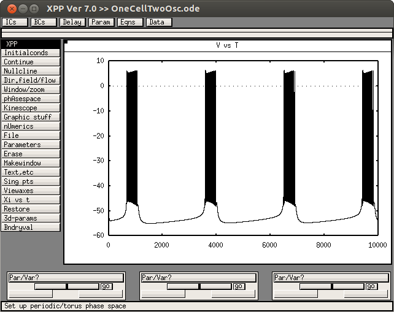
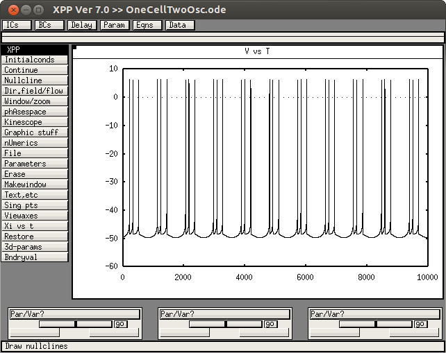
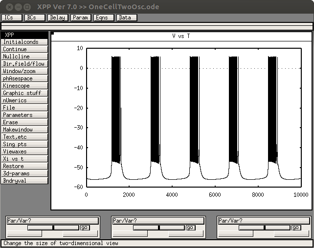
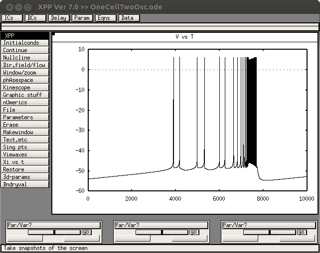

This is the readme for the model associated with the paper Park C, Rubin JE (2013) Cooperation of intrinsic bursting and calcium oscillations underlying activity patterns of model pre-Botzinger complex neurons. J Comput Neurosci 34:345-66 This model written in XPP was implemented by Jon Rubin and Choongseok Park. XPP is freely available at http://www.math.pitt.edu/~bard/xpp/xpp.html To run the model in it's default setting start with a command like (depends on your platform): xppaut OneCellTwoOsc.ode Once XPP starts select Initalconds -> (G)o to see an figure like this:  Inside XPP, use File -> Read set with the included set files to get certain dynamics from the paper: OneCellTwoOsc.ode.setsb <-> the paper's Fig. 2a,  OneCellTwoOsc.ode.setdb <-> the paper's Fig. 2b,  OneCellTwoOsc.ode.setsdb <-> the paper's Fig. 2c 